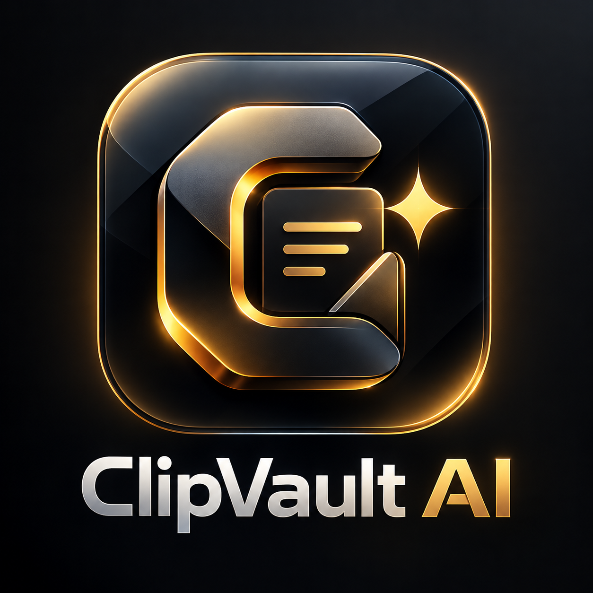

Quick capture
Save what matters fast
Capture screenshots, text, and links with keyboard shortcuts, add files, or send content into Smart Organize.

Windows workspace · Live nowCapture, search, organise, understand, and protect clipboard history, screenshots, text, links, and files in one intelligent local Windows workspace.

Capture screenshots, text, and links with keyboard shortcuts, add files, or send content into Smart Organize.
Keep automatic history for text, links, images, and files with search, copy, paste, pinning, saved clips, multiple selection, and a quick queue.
Use local summaries, similar clip matching, relevant passages, topic suggestions, library insights, and screenshot text recognition.
Import older screenshots, scan folders, browse previews, filter by date, app, or tags, and use local text recognition with auto and batch tags.
Find exact duplicates, similar images, blank captures, and older unused images with path previews, estimates, selection, and confirmation controls.
Use local encrypted content, an app PIN, sensitive-content protection, expiry, ignored-app controls, backups, restore, export, import, retention, and separate workspaces.